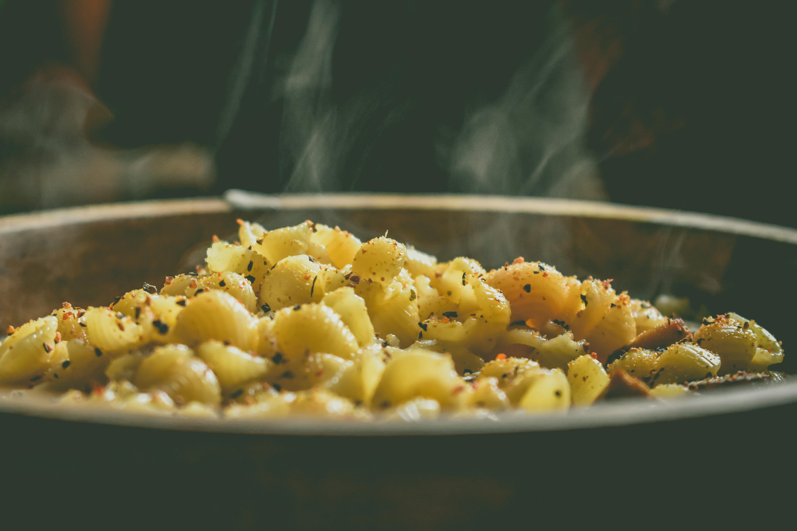

Chicken Pieces
Eggs
Hot Sauce
Worcestershire Sauce
All-Purpose Flour
Season Salt
Pepper
Cornstrach
Paprika
Cayenne Pepper
Garlic and Onion Powder
Whisk together the eggs, hot sauce, and Worcestershire sauce in a
medium-sized bowl.
Add the flour, cornstarch, and all of the seasonings
to a paper bag and shake to mix everything together. Dip each piece of
chicken into the egg coating turning to get both sides. Dip the coated
chicken into the seasoned flour thoroughly covering each piece.
Add each piece of bread chicken to a baking sheet after its breaded. Finish coating all the chicken and let it sit for 10-15 minutes until the coating has set.
Heat 1-1/2 inches of oil in a cast iron skillet or heavy-bottom skillet over medium-high heat. Fry the chicken, four pieces at a time, on each side starting with dark meat since it takes longer do not overcrowd the pan. After each side has turned slightly golden, cover with the lid to steam the inside of the chicken ensuring doneness. After a couple of minutes remove the lid and continue to fry until the crust is crispy and golden brown.Remove the chicken from the oil and place it on paper towels or a wire rack to drain all the excess oil. Place the chicken on a baking sheet covered with parchment and add it to the oven to keep warm while finishing the other chicken pieces.

1 (16 ounce) package cavatappi (corkscrew macaroni)
6 tablespoons butter
½ cup all-purpose flour
5 ½ cups milk, divided
2 ½ cups shredded smoked
Gouda cheese
2 cups shredded sharp Cheddar cheese
1 ½ cups shredded Swiss cheese
1 ½ cups grated
Parmesan cheese, divide
1½ cup dry bread crumble
1 tablespoon truffle oil
Preheat the oven to 350 degrees F (175 degrees C). Grease a 9x13-inch baking dish.
Bring a large pot of lightly salted water to a boil. Cook cavatappi in the boiling water, stirring occasionally, until tender yet firm to the bite, about 8 minutes. Then Drain.
While the pasta is cooking, melt butter in a large pot over medium-low heat. Whisk flour into melted butter until mixture has a thick, paste-like consistency, about 30 seconds. Slowly whisk in 2 cups milk until smooth. Stir in remaining milk, increase the heat to medium-high, and cook, whisking constantly, until thick and almost boiling, 5 to 10 minutes.
Add Gouda, Cheddar, Swiss, and 1 cup Parmesan; stir until cheeses melt and sauce is smooth. Fold in cooked cavatappi until coated. Pour mixture into the prepared baking dish.
Stir remaining 1/2 cup Parmesan cheese and bread crumbs together in a small bowl; sprinkle over cavatappi mixture, then drizzle truffle oil over top.
Bake in the preheated oven until sauce is bubbling and topping is golden about 30 minutes. Cool for 10 minutes before serving.
